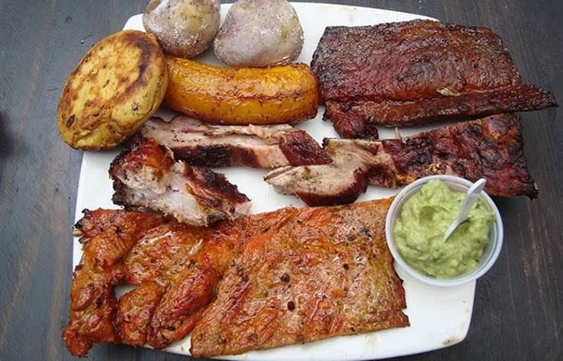

¿Cuando se celebra?
El primero de enero se celebra en todo el mundo como el primer día del año en el calendario gregoriano. Esta fecha es ampliamente reconocida y celebrada como un día festivo en muchos países, incluyendo Colombia.

¿por que se celebra?
El primero de enero es un día festivo en Colombia, al igual que en muchos otros países, porque se celebra el Año Nuevo. Es una celebración que se remonta a la antigua Roma, donde se celebraba el cambio de año en honor a Jano, el dios de las puertas y los comienzos.
Mi primero de enero
En mi familia se acostumbra compartir en familia haciendo un almuerzo familiar